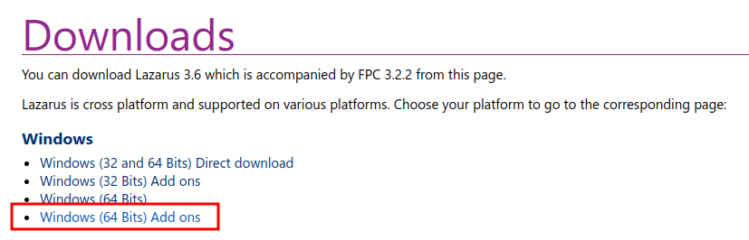
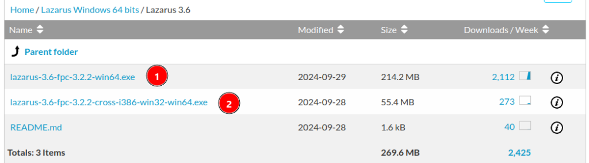
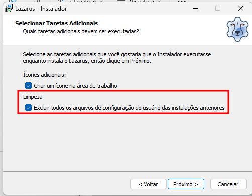

Usando Instalador padrão (nível fácil)
A instalação do Lazarus para Windows via instalador oficial é o método mais direto e conhecido. Recomendo baixar a versão que suporta tanto 32 quanto 64 bits para maior flexibilidade no desenvolvimento.
Acesse a página oficial de downloads:
https://www.lazarus-ide.org/index.php?page=downloads

Na tela seguinte, escolha os downloads na ordem recomendada:

Você deve realizar a instalação na mesma ordem mostrada na imagem. O processo é o padrão do Windows: Next -> Next -> Finish. Caso você possua uma versão anterior do Lazarus instalada, lembre-se de marcar a opção de limpeza durante o processo:

Por que instalar 64-bits com Cross-Compile 32-bits?
Este método permite que você utilize uma IDE de 64-bits (usufruindo de toda a memória RAM disponível no sistema) enquanto mantém a capacidade de gerar executáveis de 32-bits para seus clientes.
Fatores para manter o suporte a 32-bits:
- Compatibilidade com clientes que ainda utilizam Windows 32-bits.
- Integração com periféricos (impressoras fiscais, leitores de cartão) cujas DLLs e drivers são apenas 32-bits.
- Uso de SQL Clients específicos que operam em arquitetura 32-bits.
A IDE 64-bits é superior para o desenvolvimento porque elimina o limite de memória RAM (que em 32-bits é inferior a 4GB), permitindo trabalhar em múltiplos projetos simultâneos com muito mais fluidez.
Atenção ao Ambiente
Lembre-se que o cross-compile não é automático. Você precisará ajustar as Configurações do Projeto > Alvo para definir o SO (Win32) e a CPU (i386) desejados.
Além disso, se a sua IDE é 64-bits, componentes que carregam bibliotecas externas em tempo de design (como Zeos ou SQLdb) precisarão das DLLs de 64-bits instaladas para que a conexão com o banco de dados funcione dentro do editor.
Resolução de Problemas
Se você enfrentar conflitos, a melhor prática é remover versões anteriores do Lazarus e do FPC, limpando também as variáveis de ambiente (PATH) do Windows, já que o instalador pode não detectar configurações de diretórios antigos automaticamente.